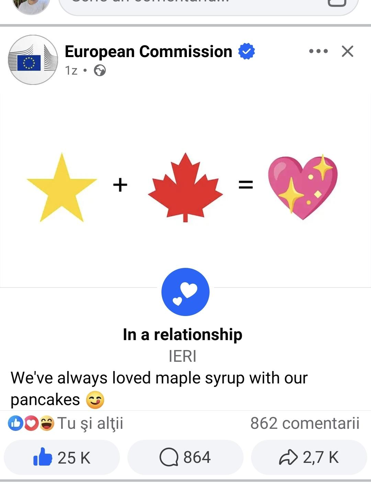

![]()
Today I saw a screenshot of the European Commission announcing that it was “In a relationship.”
A yellow star, a Canadian maple leaf, and a sparkling pink heart. Underneath: “We’ve always loved maple syrup with our pancakes 😋”
I had to check whether it was real.

This is the European Commission. An institution from which you expect “a reaffirmation of our commitment to enhanced bilateral cooperation within the existing strategic framework.”
They went with “In a relationship 💖.”
I laughed harder than I have at anything political in a long time. Then I started thinking about why I found it so wonderful.
In my previous post, I argued that the important question about the proposed EU–Canada alliance was what we wanted to build and whether we could assemble the political will to build it. Much of the initial coverage seemed bewildered that a proposed new relationship did not already have a legal definition. But creating that definition is part of the work.
This post is about where the political will comes from.
Because a fundamentally new vision for the democratic world needs people to be excited. It needs people to be on board for something. Nobody gets excited about geopolitical trade deals and federalism debates. All right, some people do, and I’m grateful someone will read the annexes. But a project of this scale needs an appeal beyond the people who already care about its institutional design.
It needs a future people want to belong to.
The Commission’s post is exceptionally good at communicating that. The joke works because of who posted it. An ordinary account sharing a heart and a maple leaf would barely register. The European Commission changing its relationship status is something you immediately send to someone else. Its own reputation for formality supplies the humour.
And the political message travels with the joke. We like each other. We’re choosing each other. We’re happy about it.
Most government attempts to be relatable make me wish someone had confiscated the social media password. This one understands its audience and its author equally well. It gives people a way to express enthusiasm without requiring them to compose an opinion on regulatory alignment.
You can just share the heart.
And there is already a striking amount of support for the relationship behind it. An Abacus Data poll of 1,479 Canadian adults, conducted September 4–9, found that 81% supported closer integration with the EU while Canada remains outside it: easier trade, travel, work and study, and cooperation on security. Only 10% opposed it. Support extended across party lines, including 70% of Conservative voters.
Eighty-one percent. Agreement on that scale about a political direction is stunning. And the poll preceded the Strasbourg speeches and the Commission’s post. The enthusiasm was already there. Good political communication can give it a shared expression and make it visible to people who might otherwise assume they are hoping alone.
That sounds small. But I think those of us who care about democratic institutions sometimes underestimate how much people need permission to enjoy supporting them. We ask people to defend democracy, protect the rule of law, resist authoritarianism, understand the stakes. Those demands are serious and necessary. They are also exhausting. A political life spent permanently bracing for the next disaster leaves very little room to imagine what success would feel like.
Here is a tiny glimpse of it: countries we like choosing to build something together, and being openly pleased about it.
Watching Carney’s Strasbourg speech, I was struck by how much time he devoted to history before turning to practical cooperation. Goethe, the wars, the Canadian soldier who brought acorns home from Vimy Ridge, the trees whose descendants later returned to France. He presented the proposed relationship as something with roots deep enough to support a new ambition. He also explicitly rejected domination as its purpose and described an alliance other democracies could join.
To me, that opening made the proposal feel earned. There was a reason for these societies to choose one another beyond the emergency of the moment. Shared history became a basis for a deliberate choice about the future.
A speech drawing on European literature and a Facebook post about maple syrup are rather different forms of communication. Yet I think they express something closely related. Both make affinity visible. Both invite people to recognise a relationship they might want to deepen.
That matters for reform within Europe too. I’ve spent my life hearing jokes about EU bureaucracy, and I’ve made plenty myself. I would like to see an ambitious democratic project become possible without immediately imagining the committee that will spend seven years determining whether it falls within its remit.
But defending Europe’s achievements and changing how its institutions work belong together. If we value what Europe makes possible, we should care whether it can act quickly and effectively enough to preserve it. We should be able to discuss more ambitious forms of cooperation, including federal ones, in terms of the lives and freedoms they would enable.
In her State of the Union address, von der Leyen connected calls for faster decisions and less administrative burden with a broader appeal to belonging. She also announced a new Congress of Europe intended to help a new generation imagine its future. Those are promises whose value will depend on what follows. But the connection between institutional capacity and public imagination is the right one to make.
People need a reason to care enough to stay involved when the negotiations become tedious. They need to understand what the compromises are meant to achieve. A young person imagining a life with more opportunities across the Atlantic has a much more concrete stake in this project than someone asked to endorse an unspecified enhancement of bilateral relations.
I think this is also the useful lesson to take from Trump’s approach to political communication. Whatever weight one gives social media in explaining his success, he understands the appeal of politics that people can participate in, repeat, joke about, and make their own. Democratic leaders should be capable of creating that kind of involvement around cooperation, confidence, and shared prosperity.
There is an enormous amount of emotional territory available there. Friendship. Mutual respect. The pleasure of discovering that people elsewhere want to stand with you. Pride in building something that others might want to join.
Of course, a social media post tells us nothing about whether negotiations will succeed. I still want to see commitments, institutions, and results. Enthusiasm creates expectations, and those expectations can turn into disappointment if leaders fail to deliver.
But I don’t want to dismiss the enthusiasm before we have even allowed ourselves to feel it. I want something constructive to do with the disbelief and anxiety of watching the world change. I want a democratic future that deserves more from us than a weary insistence that the alternatives are worse.
For once, I saw the European Commission communicating as though that future might also be something to look forward to.
Apparently, it comes with maple syrup.
Reuse
Citation
@online{popov2026,
author = {Popov, Vencislav},
title = {Europe Is in a Relationship. {And} {I’m} Here for It.},
date = {2026-09-28},
url = {https://venpopov.com/posts/2026/europe-is-in-a-relationship/},
langid = {en}
}